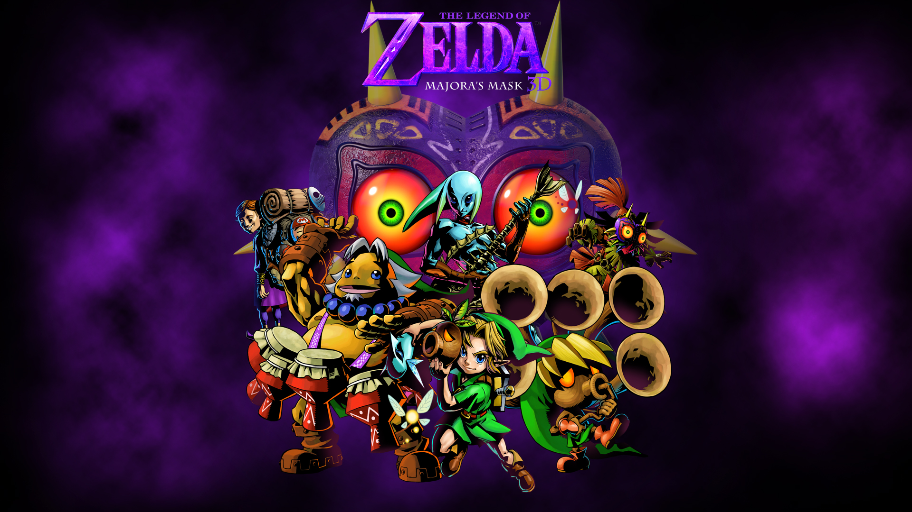

The Legend of Zelda: Majora's Mask
Majora's Mask is set in Termina, an alternate reality to Ocarina of Time's Hyrule, which is to be destroyed along with its inhabitants in three days by a giant falling moon unless the player can save it from imminent doom. The plot's antagonist is a mischievous imp called the Skull Kid who has stolen a powerful, ancient artifact called Majora's Mask from an enigmatic traveling mask salesman. Under its evil influence, the Skull Kid uses his newfound powers to pull the moon out of orbit and cause it to gradually fall towards Termina, where it will crash in 72 hours. Asked by the salesman to retrieve the mask, the protagonist, Link, must repeatedly reset time using a magical ocarina to prevent the impending apocalypse. Along the way, Link acquires a number of unique masks by helping the denizens of Termina, which grant a range of abilities including shape-shifting.